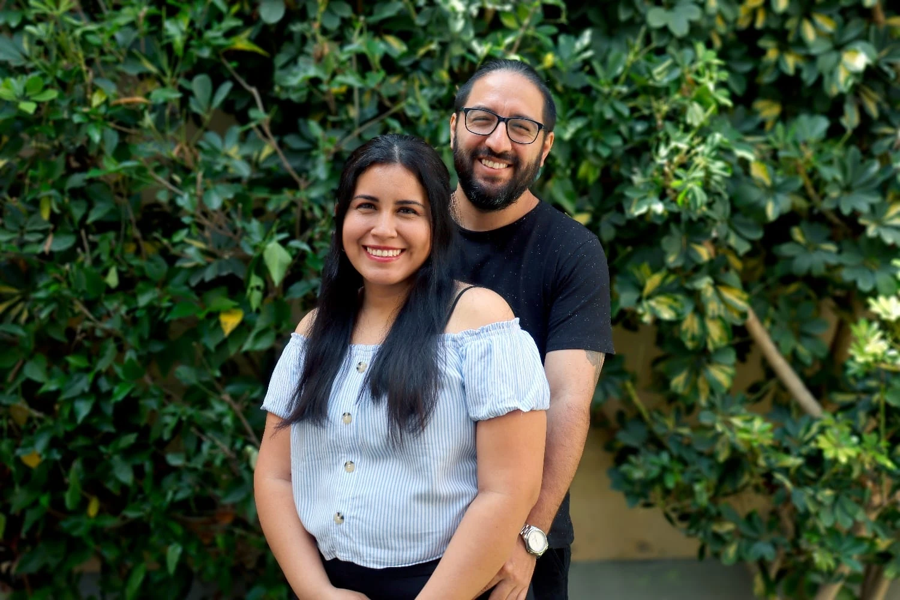
PastoresDanny y Daniela Príncipe
Fundadores de YELP y pastores principales de la comunidad.
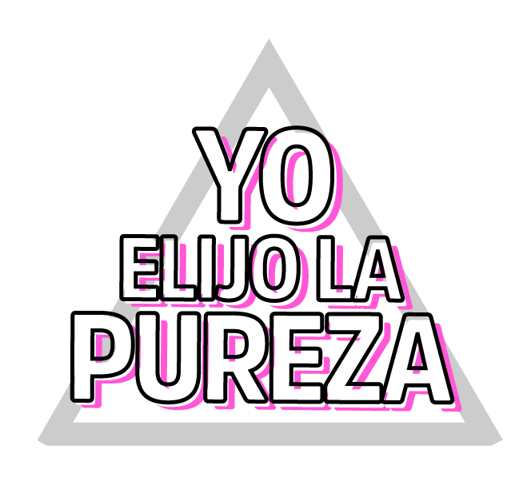
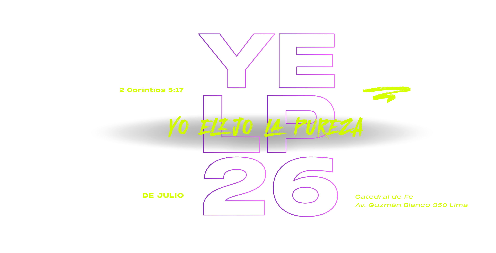
Un congreso para conversar sobre sexualidad, identidad y relaciones desde la fe cristiana.
Un espacio de aprendizaje para preadolescentes, jóvenes, adultos y familias.
Consulta las próximas fechas con el equipo de YELP.

PastoresFundadores de YELP y pastores principales de la comunidad.
Pastora de jóvenes y conferencista sobre sexualidad.
Especialista en salud pública y salud sexual.
Identidad, valor y diseño.
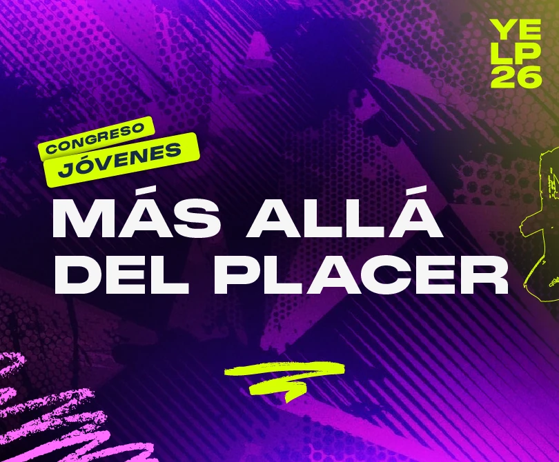
Sexualidad con propósito.
Límites, protección y valentía.
Conexión, soledad y amor.
Emociones y decisiones sabias.
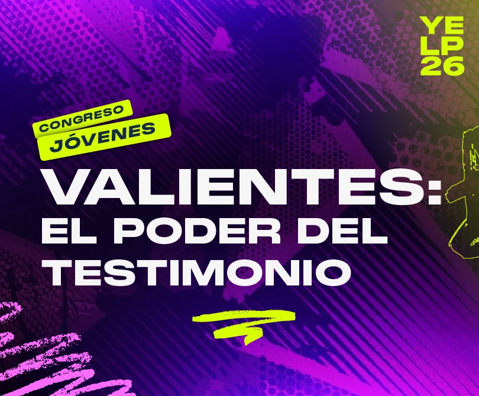
Historias de gracia y libertad.
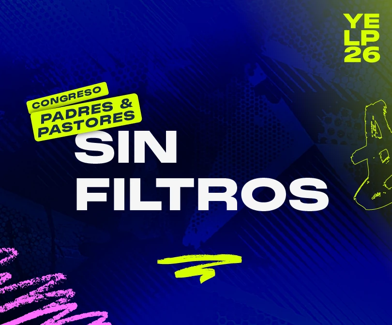
Formación de una identidad firme.
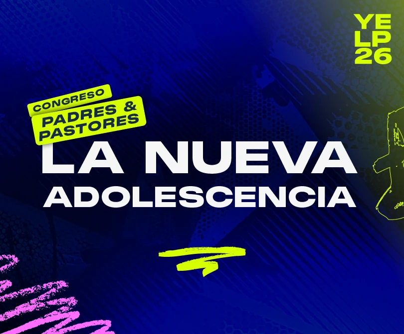
Acompañamiento a nuevas generaciones.
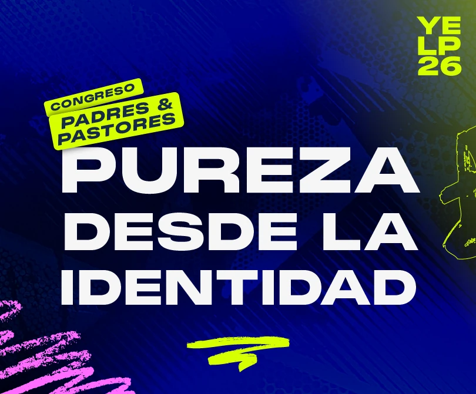
Libertad desde una vida transformada.
Ayuda, arrepentimiento y restauración.
Conversaciones abiertas sobre sexualidad.
Orientación bíblica con compasión.
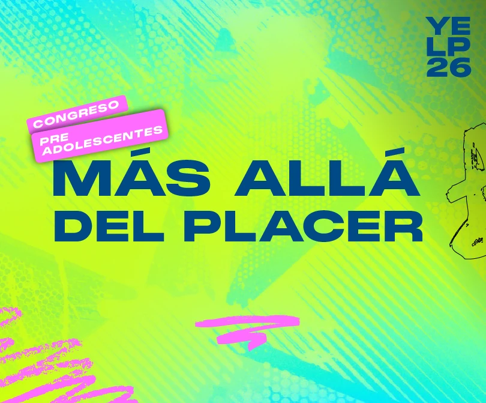
El propósito del diseño de Dios.
Protección y búsqueda de ayuda.
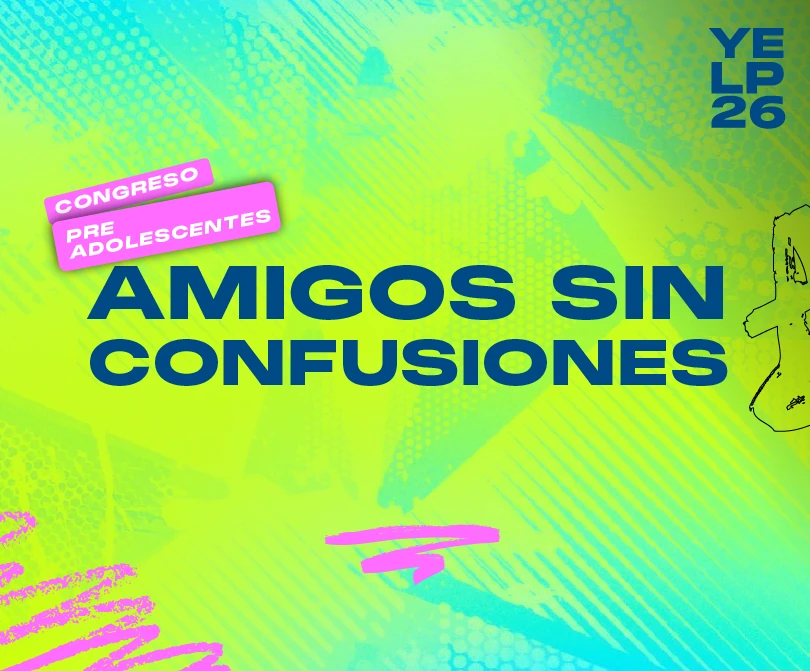
Amistades con límites sanos.
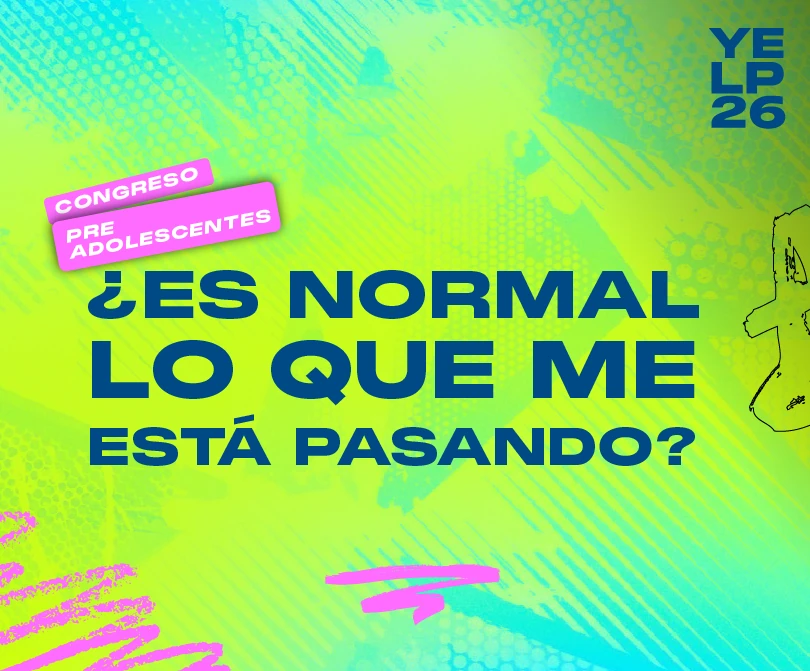
Cambios, confianza y crecimiento.
Identidad en Cristo y esperanza.
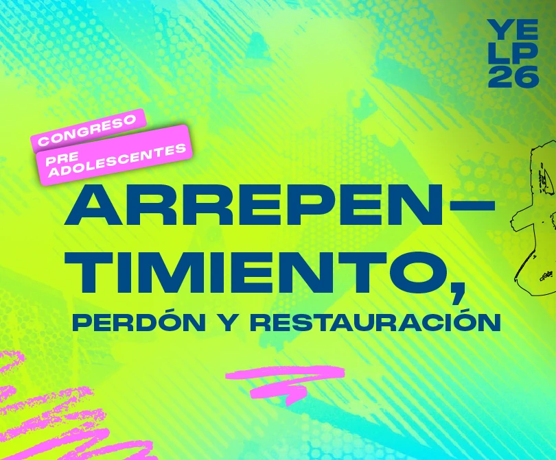
Perdón para una nueva historia.
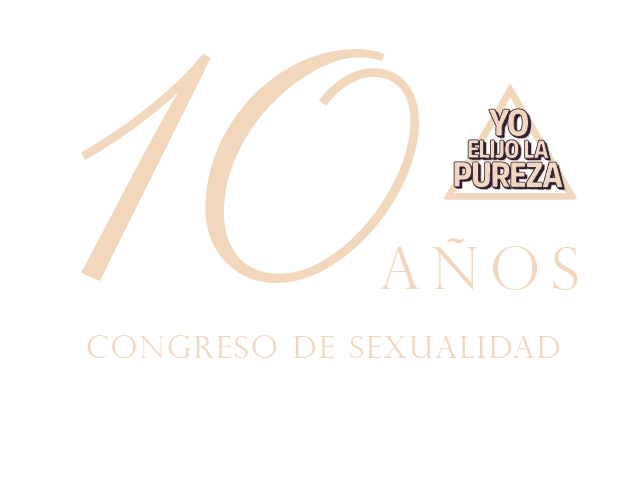
Nuestra historiaEn 2024 celebramos diez años de YELP. Revive el encuentro y a quienes eligieron caminar en integridad.
Ver resumen de YELP 2024 (abre en una pestaña nueva)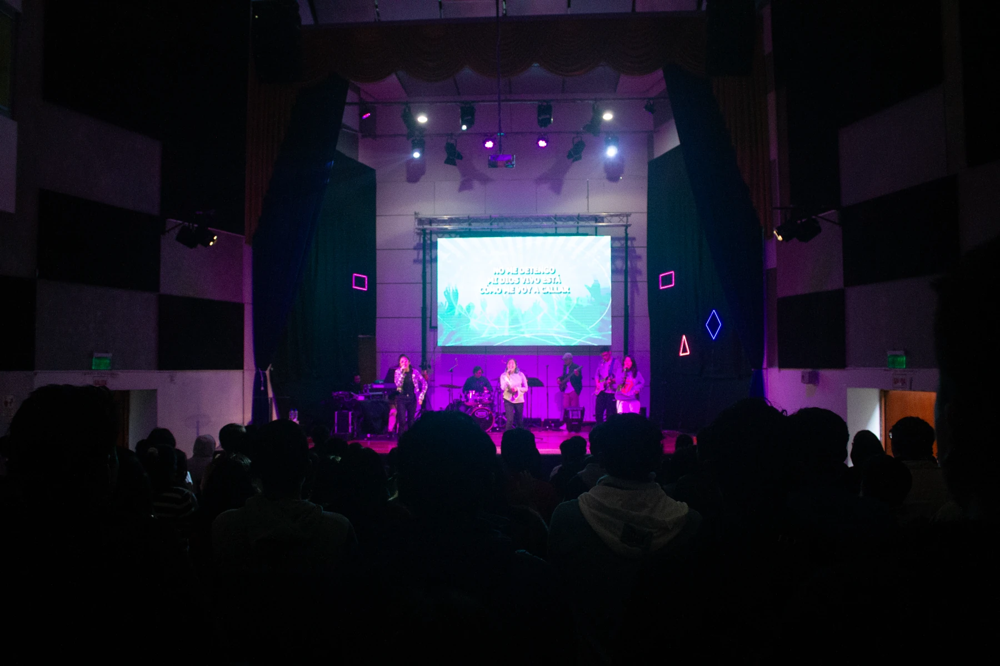

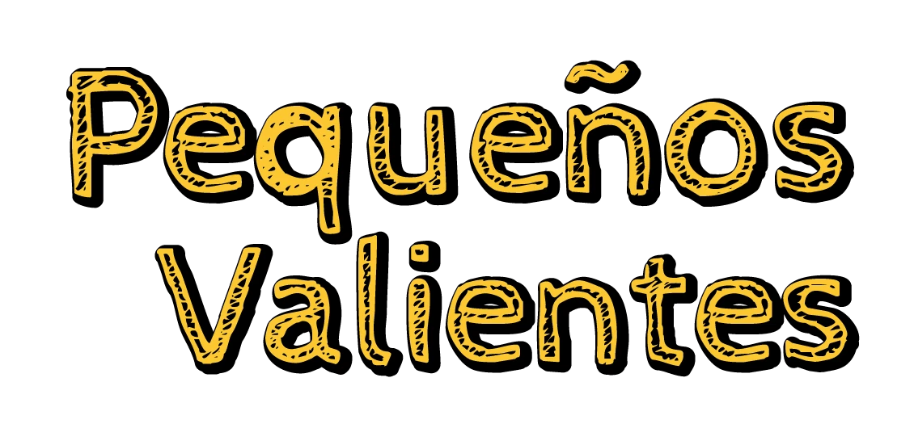
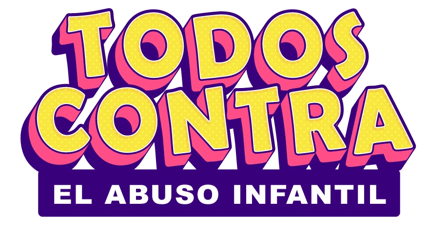
Identidad y prevención del abuso infantil.
Descargar Pequeños Valientes PDF · 18 MB · Descarga gratuita
Un recurso sobre pureza, libertad y restauración en Jesús.
Descargar Escape PDF · 24 MB · Descarga gratuita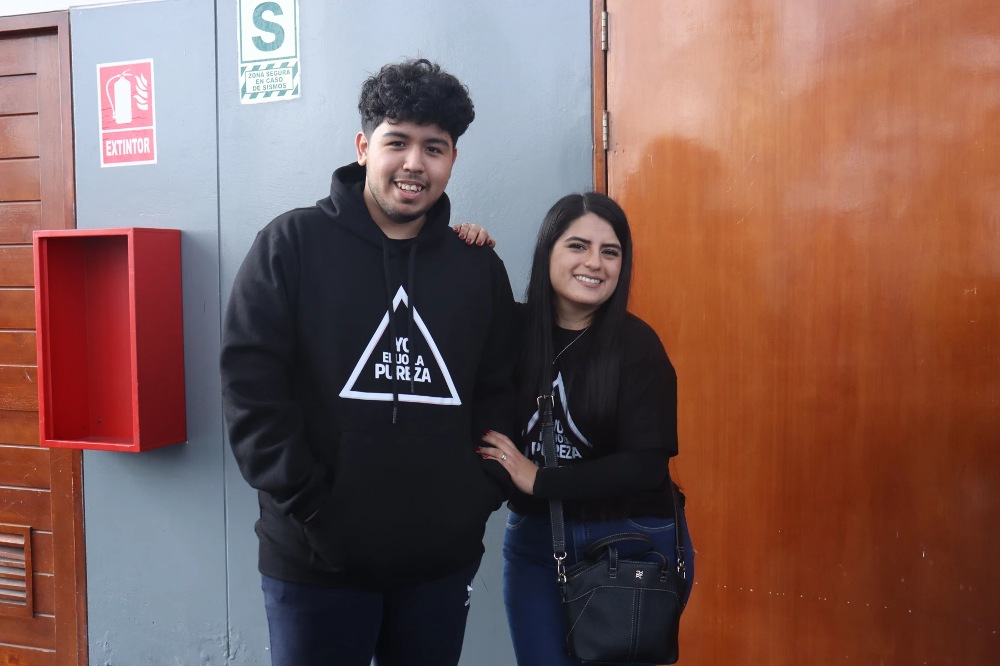
Información sobre el congreso y sus próximas actividades.